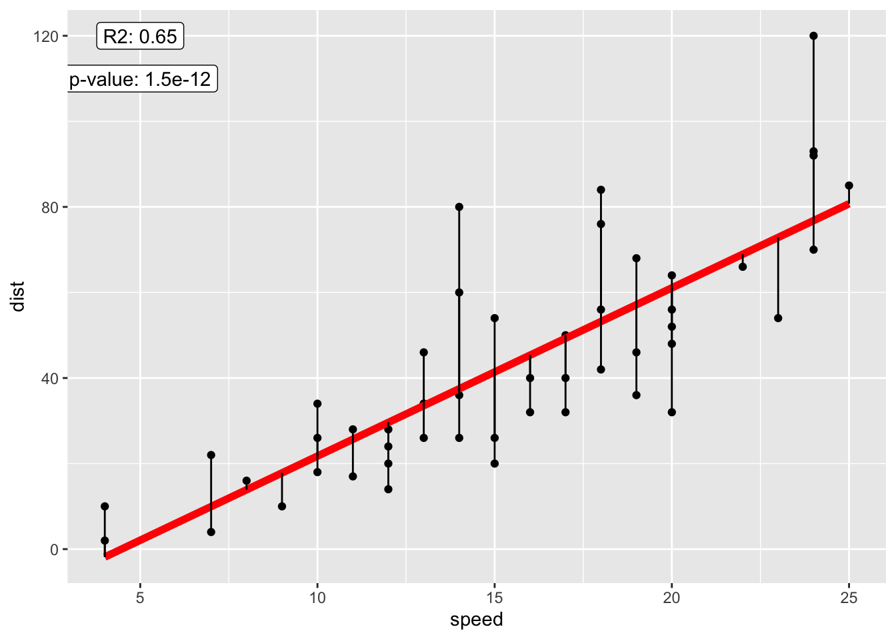

03-regression
nilseling
2020-05-09
Last updated: 2020-05-18
Checks: 7 0
Knit directory: Session_5-7/
This reproducible R Markdown analysis was created with workflowr (version 1.6.2). The Checks tab describes the reproducibility checks that were applied when the results were created. The Past versions tab lists the development history.
Great! Since the R Markdown file has been committed to the Git repository, you know the exact version of the code that produced these results.
Great job! The global environment was empty. Objects defined in the global environment can affect the analysis in your R Markdown file in unknown ways. For reproduciblity it’s best to always run the code in an empty environment.
The command set.seed(20200501) was run prior to running the code in the R Markdown file. Setting a seed ensures that any results that rely on randomness, e.g. subsampling or permutations, are reproducible.
Great job! Recording the operating system, R version, and package versions is critical for reproducibility.
Nice! There were no cached chunks for this analysis, so you can be confident that you successfully produced the results during this run.
Great job! Using relative paths to the files within your workflowr project makes it easier to run your code on other machines.
Great! You are using Git for version control. Tracking code development and connecting the code version to the results is critical for reproducibility.
The results in this page were generated with repository version 378d254. See the Past versions tab to see a history of the changes made to the R Markdown and HTML files.
Note that you need to be careful to ensure that all relevant files for the analysis have been committed to Git prior to generating the results (you can use wflow_publish or wflow_git_commit). workflowr only checks the R Markdown file, but you know if there are other scripts or data files that it depends on. Below is the status of the Git repository when the results were generated:
Ignored files:
Ignored: R/.DS_Store
Ignored: R/Session_1/Session_1.nb.html
Ignored: R/Session_2/Session_2.nb.html
Ignored: R/Session_3/Session_3.nb.html
Ignored: R/Session_4/.DS_Store
Ignored: R/Session_4/Session_4.nb.html
Ignored: R/Session_5-7/.Rhistory
Ignored: R/Session_5-7/.Rproj.user/
Ignored: R/Session_5-7/data/iris.rds
Unstaged changes:
Modified: R/Session_5-7/analysis/04-plotting.Rmd
Modified: R/Session_5-7/analysis/_site.yml
Modified: R/Session_5-7/analysis/about.Rmd
Modified: R/Session_5-7/analysis/index.Rmd
Note that any generated files, e.g. HTML, png, CSS, etc., are not included in this status report because it is ok for generated content to have uncommitted changes.
These are the previous versions of the repository in which changes were made to the R Markdown (R/Session_5-7/analysis/03-regression.Rmd) and HTML (R/Session_5-7/docs/03-regression.html) files. If you’ve configured a remote Git repository (see ?wflow_git_remote), click on the hyperlinks in the table below to view the files as they were in that past version.
| File | Version | Author | Date | Message |
|---|---|---|---|---|
| Rmd | c734bed | nilseling | 2020-05-11 | Finished session |
| Rmd | a36d214 | nilseling | 2020-05-10 | Calculating the significance level |
| Rmd | bf3ae0b | nilseling | 2020-05-10 | Calculating variance measures |
| Rmd | d318534 | nilseling | 2020-05-10 | Added .m file |
| Rmd | fd7860d | nilseling | 2020-05-10 | Manual calculation of residuals |
| Rmd | 5423e84 | nilseling | 2020-05-10 | Manual calculation of regression coefficients |
| Rmd | 9602600 | nilseling | 2020-05-10 | Intro to lm function and linear regression |
| Rmd | 8039ee5 | nilseling | 2020-05-09 | Start of regression session |
Introduction
In todays session, we will focus on applied statistics in R. As an example (statistics is a huuuuuuuuge field), I will go through different regression models. In particular, these will be simple linear regression, multiple linear regression and analysis of variance. I will also try to explain the underlying mathematical derivations to some extend. This tutorial is heavily based on the instructions here.
Linear regression
In the first section, we will discuss linear regression problems using two different car-related datasets.
Simple linear regression
Here, I will give an introdcution to the most simple regression model available: the simple linear regression. I will also explain the different values returned by the model.
As an example datasets, we will use the cars data. ?cars returns: The data give the speed of cars and the distances taken to stop. Note that the data were recorded in the 1920s.
str(cars)'data.frame': 50 obs. of 2 variables:
$ speed: num 4 4 7 7 8 9 10 10 10 11 ...
$ dist : num 2 10 4 22 16 10 18 26 34 17 ...In any regression problem, it is crucial to first understand the relationship between the response variable (or “dependent” variable; or target; on the y-axis) and the explanatory variable (or “independent” variable; or predictor; on the x-axis):
library(tidyverse)── Attaching packages ──────────────────────────────────────────────────────────────────────────────────────────────────────── tidyverse 1.3.0 ──✓ ggplot2 3.3.0 ✓ purrr 0.3.4
✓ tibble 3.0.1 ✓ dplyr 0.8.5
✓ tidyr 1.0.2 ✓ stringr 1.4.0
✓ readr 1.3.1 ✓ forcats 0.5.0── Conflicts ─────────────────────────────────────────────────────────────────────────────────────────────────────────── tidyverse_conflicts() ──
x dplyr::filter() masks stats::filter()
x dplyr::lag() masks stats::lag()cars %>%
ggplot() + geom_point(aes(speed, dist))
| Version | Author | Date |
|---|---|---|
| 5705294 | nilseling | 2020-05-10 |
We now want to model the relationship between the response variable dist and the explanatory variable speed in the form of:
\(dist = f(speed) + \epsilon\)
Here, \(f(speed)\) is a function that depends on speed (or a constant) and \(\epsilon\) is a “residual error” that accounts for unexplained variability in the model. By plotting the data, we know, that the data shows a linear dependence - we can therefore use a function that depends linearly on speed to model dist:
\(dist = \beta_0 + \beta_1 \cdot speed + \epsilon\)
In correct mathematical notation, the equation would be:
\(Y = \beta_0 + \beta_1 X + \epsilon\)
or:
\(Y_i = \beta_0 + \beta_1 x_i + \epsilon_i\)
where \(\epsilon_i \sim N(0, \sigma^2)\)
The last equation means that the error is a independent and identically distributed (iid) randomw variable with mean 0 and standard deviation \(\sigma^2\).
To fit a linear regression, we make the following assumptions:
- Linear: the relationship between \(Y\) and \(x\) is linear
- Independent: The errors \(\epsilon\) are independent
- Normal: the errors \(\epsilon\) are normal distributed
- Equal variance: at each value of x, the variance of \(Y\) is equal to \(\sigma^2\)
Fitting a linear regression in R
To fit a linear regression in R, we can use the lm function of the stats package.
stop_dist_model <- lm(dist ~ speed, data = cars)There are now several ways of visualizing the fitting results:
stop_dist_model
Call:
lm(formula = dist ~ speed, data = cars)
Coefficients:
(Intercept) speed
-17.579 3.932 summary(stop_dist_model)
Call:
lm(formula = dist ~ speed, data = cars)
Residuals:
Min 1Q Median 3Q Max
-29.069 -9.525 -2.272 9.215 43.201
Coefficients:
Estimate Std. Error t value Pr(>|t|)
(Intercept) -17.5791 6.7584 -2.601 0.0123 *
speed 3.9324 0.4155 9.464 1.49e-12 ***
---
Signif. codes: 0 '***' 0.001 '**' 0.01 '*' 0.05 '.' 0.1 ' ' 1
Residual standard error: 15.38 on 48 degrees of freedom
Multiple R-squared: 0.6511, Adjusted R-squared: 0.6438
F-statistic: 89.57 on 1 and 48 DF, p-value: 1.49e-12Before we go into detail what these results mean, I want to introduce the broom package to tidying up these results:
library(broom)
# Tidy output of the regression parameters
broom::tidy(stop_dist_model)# A tibble: 2 x 5
term estimate std.error statistic p.value
<chr> <dbl> <dbl> <dbl> <dbl>
1 (Intercept) -17.6 6.76 -2.60 1.23e- 2
2 speed 3.93 0.416 9.46 1.49e-12# Tidy output of the fitting results
broom::glance(stop_dist_model)# A tibble: 1 x 11
r.squared adj.r.squared sigma statistic p.value df logLik AIC BIC
<dbl> <dbl> <dbl> <dbl> <dbl> <int> <dbl> <dbl> <dbl>
1 0.651 0.644 15.4 89.6 1.49e-12 2 -207. 419. 425.
# … with 2 more variables: deviance <dbl>, df.residual <int># Tidy output of the fitted values
head(broom::augment(stop_dist_model))# A tibble: 6 x 9
dist speed .fitted .se.fit .resid .hat .sigma .cooksd .std.resid
<dbl> <dbl> <dbl> <dbl> <dbl> <dbl> <dbl> <dbl> <dbl>
1 2 4 -1.85 5.21 3.85 0.115 15.5 0.00459 0.266
2 10 4 -1.85 5.21 11.8 0.115 15.4 0.0435 0.819
3 4 7 9.95 4.11 -5.95 0.0715 15.5 0.00620 -0.401
4 22 7 9.95 4.11 12.1 0.0715 15.4 0.0255 0.813
5 16 8 13.9 3.77 2.12 0.0600 15.5 0.000645 0.142
6 10 9 17.8 3.44 -7.81 0.0499 15.5 0.00713 -0.521Using the broom package, we can now plot the fitted line to the data:
augment(stop_dist_model) %>%
ggplot() + geom_point(aes(speed, dist)) +
geom_line(aes(speed, .fitted), colour = "red", lwd = 2) +
geom_segment(aes(speed, dist, xend = speed, yend = .fitted)) +
geom_label(aes(5, 120, label = paste("R2:", round(r.squared, 2))),
data = glance(stop_dist_model)) +
geom_label(aes(5, 110, label = paste("p-value:", format(p.value, digits = 2))),
data = glance(stop_dist_model)) 
| Version | Author | Date |
|---|---|---|
| 5705294 | nilseling | 2020-05-10 |
Calculating the results by hand
To fully understand, what the regression results mean, we will next calculate these values by hand.
To achieve the best linear model fit, we want to minimize the sum of all squared distances between the regression line and the data points:
\(argmin \sum_{i=1}^n(y_i - f(x_i))^2 = argmin \sum_{i=1}^n(y_i - (\beta_0 + \beta_1x_i))^2\)
Note: the error is defined as: \(\epsilon_i = y_i - (\beta_0 + \beta_1x_i)\) We basically try to minimize the sum of squared errors.
The full mathematical derivation can be found here
As a summary, we need to (i) calculate the partial derivatives of \((y_i - (\beta_0 + \beta_1x_i))^2\) for \(\beta_0\) and \(\beta_1\), (ii) set them to 0 and solve the resulting set of linear equations.
The result is the following:
\(\hat{\beta}_1 = \dfrac{\sum_{i=1}^n(x_i-\bar{x})(y_i-\bar{y})}{\sum_{i=1}^n(x_i-\bar{x})^2}=\dfrac{S_{xy}}{S_{xx}}\)
and
\(\hat{\beta}_0 = \bar{y} - \hat{\beta_1}\bar{x}\)
As homework, you can try to derive these equations.
Note: the “hat” on the betas means “estimate” since we do not know the true underlying regression parameters - more samples will change the estimates.
Calculating the regression coefficients in R
We define the variables x and y to be in line with the math above:
x <- cars$speed
y <- cars$dist
Sxy <- sum((x - mean(x)) * (y - mean(y)))
Sxx <- sum((x - mean(x)) ^ 2)
beta_hat_1 <- Sxy / Sxx
beta_hat_0 <- mean(y) - beta_hat_1 * mean(x)
c(beta_hat_0, beta_hat_1)[1] -17.579095 3.932409# Compare to fitted model
stop_dist_model
Call:
lm(formula = dist ~ speed, data = cars)
Coefficients:
(Intercept) speed
-17.579 3.932 Calculating the residual error in R
We can also manually calculate the residual error in R. The residuals can be obtained from the modelled fit using the residuals accessor function:
stop_dist_residuals <- residuals(stop_dist_model)
manual_residuals <- y - (beta_hat_0 + beta_hat_1 * x)
# Test for equality
all.equal(as.numeric(stop_dist_residuals), manual_residuals)[1] TRUECalculating the residual standard error
So far, we have calculated \(\hat{\beta_1}\) and \(\hat{\beta_0}\). Now, we want to estimate the variance \(\sigma^2\) of the model. An estimate for \(\sigma^2\) is defined as:
\(s_e^2 = \frac{1}{n-2}\sum_{i=1}^n(y_i - \hat{y})^2=\frac{1}{n-2}\sum_{i=1}^n\epsilon_i^2\)
We can now calculate this in R:
s2_e <- sum(manual_residuals^2) / (length(manual_residuals) - 2)The denominatore here represents the “degrees of freedom” of the model, which in this case is defined as the number of observations minus the number of model parameters.
The “residual standard error” of the model is the standard deviation:
sqrt(s2_e)[1] 15.37959# Compare to model
summary(stop_dist_model)$sigma[1] 15.37959This means the estimates of the mean stopping distance are on average 15.38 meters off.
Variance decomposition
We can decompose the variation of the data points (\(y_i\)) from the sample mean (\(\bar{y}\)) as follows:
\(y_i - \bar{y} = (y_i - \hat{y_i}) + (\hat{y_i} - \bar{y})\)
By complicated calculation (see here), we can show that:
\(\sum_{i=1}^n(y_i - \bar{y})^2 = \sum_{i=1}^n(y_i - \hat{y_i})^2 + \sum_{i=1}^n(\hat{y_i} - \bar{y})^2\)
which we can also simply write as:
SST = SSE + SSReg
Here, SST means “sum of squares total”, SSE means “sum of squares error” and SSReg means “sum of squares regression”.
We can now compute the individual values:
y_hat <- beta_hat_0 + beta_hat_1 * x
SST <- sum((y - mean(y)) ^ 2)
SSE <- sum((y - y_hat) ^ 2)
SSReg <- sum((y_hat - mean(y)) ^ 2)We calculated these measures to derive the “coefficient of determination” also denoted as \(R^2\).
This measure can be calculated as follows:
R2 <- SSReg / SSTOne can understand the coefficent of determination as the proportion of total variance that the model captures.
The adjusted \(R^2\) accounts for the degrees of freedom in the model since the \(R^2\) value by default increases when more explanatory variables are added:
\(\bar{R}^2 = 1 - (1 - R^2)\dfrac{n - 1}{n - p - 1}\)
where \(R^2\) is the coefficient of determination, \(n\) is the number of samples and \(p\) is the number of explanatory variables excluding the intercept.
In R:
adjR2 <- 1 - (1 - R2) * ((nrow(cars) - 1) / (nrow(cars) - 1 - 1))Inference of simple linear regression
Defining the regression parameters as random variables
At this point, we will not go through the mathematical derivation of the following equations. Have a look here and here for more proofs.
What we need to know is that \(\hat{\beta}_0\) and\(\hat{\beta}_1\) can be written as a linear combination of the response variables \(Y_i\). We know that \(Y_i\) is normal distributed, therefore \(\hat{\beta}_0\) and\(\hat{\beta}_1\) are also normal distributed:
\[ \hat{\beta}_1 \sim N\left( \beta_1, \ \frac{\sigma^2}{\sum_{i = 1}^{n}(x_i - \bar{x})^2} \right). \]
and
\[ \hat{\beta}_0 = \sim N\left( \beta_0, \ \frac{\sigma^2 \sum_{i = 1}^{n}x_i^2}{n \sum_{i = 1}^{n}(x_i - \bar{x})^2} \right). \]
We can now standardize these equations (computing the z-score):
\[ \frac{\hat{\beta}_0 - \beta_0}{\text{SD}[\hat{\beta}_0]} \sim N(0, 1) \]
and
\[ \frac{\hat{\beta}_1 - \beta_1}{\text{SD}[\hat{\beta}_1]} \sim N(0, 1) \]
where
\[ \text{SD}[\hat{\beta}_0] = \sigma\sqrt{\frac{1}{n} + \frac{\bar{x}^2}{S_{xx}}} \]
and
\[ \text{SD}[\hat{\beta}_1] = \frac{\sigma}{\sqrt{S_{xx}}}. \]
Calculating the standard error
However, we don’t know the true standard deviation \(\sigma\) of the model. Therefore, we will plug in the “residual standard error” as calculated above.
\[ \text{SE}[\hat{\beta}_0] = s_e\sqrt{\frac{1}{n} + \frac{\bar{x}^2}{S_{xx}}} \]
\[ \text{SE}[\hat{\beta}_1] = \frac{s_e}{\sqrt{S_{xx}}} \]
Here, \(S_{xx} = \sum_{i = 1}^{n}(x_i - \bar{x})^2\)
We can now calculate these in R:
Sxx <- sum((x - mean(x)) ^ 2)
s_e <- sqrt(s2_e)
n <- nrow(cars)
SE_beta_hat_0 <- s_e * sqrt(1 / n + mean(x) ^ 2 / Sxx)
SE_beta_hat_1 <- s_e / sqrt(Sxx)
c(SE_beta_hat_0, SE_beta_hat_1)[1] 6.7584402 0.4155128summary(stop_dist_model)$coefficients Estimate Std. Error t value Pr(>|t|)
(Intercept) -17.579095 6.7584402 -2.601058 1.231882e-02
speed 3.932409 0.4155128 9.463990 1.489836e-12We can proof that
\[ \frac{\hat{\beta}_0 - \beta_0}{\text{SE}[\hat{\beta}_0]} \sim t_{n-2} \]
and
\[ \frac{\hat{\beta}_1 - \beta_1}{\text{SE}[\hat{\beta}_1]} \sim t_{n-2} \]
follows a \(t\) distribution with \(n - 2\) degrees of freedom. The \(t\) distribution is similar to a normal distribution with heavier tails.
Calculating the t-statistic
Based on the equation above, we can now calculate the t-statistic based on a given hypothesis test:
\[ H_0: \beta_0 = \beta_{00} \quad \text{vs} \quad H_1: \beta_0 \neq \beta_{00} \]
The standard hypothesis for a linear regression model is of the form:
\[ H_0: \beta_0 = 0 \quad \text{vs} \quad H_1: \beta_0 \neq 0 \]
We can therefore calculate the t-statistic in the form:
\[ t = \frac{\hat{\beta}_1-0}{\text{SE}[\hat{\beta}_1]} \]
And in R:
t_beta_hat_0 <- (beta_hat_0 - 0) / SE_beta_hat_0
t_beta_hat_0[1] -2.601058t_beta_hat_1 <- (beta_hat_1 - 0) / SE_beta_hat_1
t_beta_hat_1[1] 9.46399Calculating the significance level
Since we know, that this measure follows a t distribution, we can now calculate the “p value”. The p-value here means the probability of rejecting the null hypothesis even though the null hypothesis is true. This also considered to performing a type I error. The p-value can be calculated using the pt function and multiplying the value by 2 to account for a two-sided test.
p_beta_hat_0 <- 2 * pt(abs(t_beta_hat_0), df = nrow(cars) - 2, lower.tail = FALSE)
p_beta_hat_0[1] 0.01231882p_beta_hat_1 <- 2 * pt(abs(t_beta_hat_1), df = nrow(cars) - 2, lower.tail = FALSE)
p_beta_hat_1[1] 1.489836e-12Confidence intervals
We can now also compute the confidence interval of the regression parameters:
confint(stop_dist_model, level = 0.99) 0.5 % 99.5 %
(Intercept) -35.706610 0.5484205
speed 2.817919 5.0468988Meaning: we are to 99% confident that the value for the regression parameters lies within the given interval.
Further reading
Statistical modelling is quite complex and out-of-scope of this introduction course. However, I can highly recommend reading the remaining chapters of the Applied statistics in R course
sessionInfo()R version 4.0.0 (2020-04-24)
Platform: x86_64-apple-darwin17.0 (64-bit)
Running under: macOS Catalina 10.15.4
Matrix products: default
BLAS: /Library/Frameworks/R.framework/Versions/4.0/Resources/lib/libRblas.dylib
LAPACK: /Library/Frameworks/R.framework/Versions/4.0/Resources/lib/libRlapack.dylib
locale:
[1] en_US.UTF-8/en_US.UTF-8/en_US.UTF-8/C/en_US.UTF-8/en_US.UTF-8
attached base packages:
[1] stats graphics grDevices utils datasets methods base
other attached packages:
[1] broom_0.5.6 forcats_0.5.0 stringr_1.4.0 dplyr_0.8.5
[5] purrr_0.3.4 readr_1.3.1 tidyr_1.0.2 tibble_3.0.1
[9] ggplot2_3.3.0 tidyverse_1.3.0 workflowr_1.6.2
loaded via a namespace (and not attached):
[1] tidyselect_1.0.0 xfun_0.13 haven_2.2.0 lattice_0.20-41
[5] colorspace_1.4-1 vctrs_0.2.4 generics_0.0.2 htmltools_0.4.0
[9] yaml_2.2.1 utf8_1.1.4 rlang_0.4.6 later_1.0.0
[13] pillar_1.4.4 withr_2.2.0 glue_1.4.0 DBI_1.1.0
[17] dbplyr_1.4.3 modelr_0.1.7 readxl_1.3.1 lifecycle_0.2.0
[21] munsell_0.5.0 gtable_0.3.0 cellranger_1.1.0 rvest_0.3.5
[25] evaluate_0.14 labeling_0.3 knitr_1.28 httpuv_1.5.2
[29] fansi_0.4.1 Rcpp_1.0.4.6 promises_1.1.0 backports_1.1.6
[33] scales_1.1.0 jsonlite_1.6.1 farver_2.0.3 fs_1.4.1
[37] hms_0.5.3 digest_0.6.25 stringi_1.4.6 grid_4.0.0
[41] rprojroot_1.3-2 cli_2.0.2 tools_4.0.0 magrittr_1.5
[45] crayon_1.3.4 whisker_0.4 pkgconfig_2.0.3 ellipsis_0.3.0
[49] xml2_1.3.2 reprex_0.3.0 lubridate_1.7.8 rstudioapi_0.11
[53] assertthat_0.2.1 rmarkdown_2.1 httr_1.4.1 R6_2.4.1
[57] nlme_3.1-147 git2r_0.27.1 compiler_4.0.0